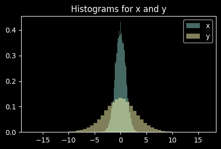

Makemore 3.1: Activations, Gradients and Batch Normalisation - Part 1
machine learning
pytorch
makemore
Author
Marc Dumon
Published
May 26, 2023
Code
import randomimport stringfrom typing import Optional, Literalimport numpy as npimport torchimport torch.nn.functional as Ffrom torch import Tensorimport matplotlib.pyplot as pltimport seaborn as snsimport plotly.express as pximport plotly.graph_objects as goimport pandas as pdfrom dataclasses import dataclass, fieldtorch.set_printoptions(linewidth=120)seed =2**31-1
In this notebook, we will delve into the inner workings of multi-layer perceptrons (MLPs) and examine the statistics of forward pass activations and backward pass gradients. We will also discuss potential issues that can arise from improper scaling and explore diagnostic tools and visualizations for understanding the performance of a deep network. Additionally, we will explore why training deep neural networks can be challenging and introduce one of the key innovations that made this process easier: Batch Normalization.
Setup
Load the data
# Load the datawithopen("./data/names.txt", "r") as f: names = f.read().splitlines()print(f"Total # names: {len(names):.>25,}")print(f"Total # characters in all names: {len(''.join(names)):,}")print(names[:5])
Total # names: ...................32,033
Total # characters in all names: 196,113
['emma', 'olivia', 'ava', 'isabella', 'sophia']
Encoding and decoding characters
We define an encoder ch2ix and decoder ix2ch function that maps a character with a numerical representation (i.e. a unique integer) and vice-versa.
chars ="."+ string.ascii_lowercasech2ix = {s: i for i, s inenumerate(chars)}ix2ch = {i: s for s, i in ch2ix.items()}print("Encoder ch2ix:\n", ch2ix)print("Decoder ix2ch:\n", ix2ch)print("E.g. emma:", [ch2ix[c] for c in".emma."])
def make_dataset(words, block_size=3): X, Y = [], []for w in words: context = [0] * block_sizefor ch in w +".": ix = ch2ix[ch] X.append(context) Y.append(ix) context = context[1:] + [ix] # crop and append X = torch.tensor(X) Y = torch.tensor(Y)print(f"Shape (X, Y): {X.shape}, {Y.shape}")return X, Y
class MLP:def__init__(self, vocab_size: int=27, block_size: int=3, emb_dim: int=10, hid_dim: int=100, seed: int|None=None, ) ->None: g = torch.Generator().manual_seed(seed) if seed elseNoneself.block_size = block_sizeself.emb_dim = emb_dimself.hid_dim = hid_dimself.C = torch.randn((vocab_size, emb_dim), generator=g)self.W1 = torch.randn((block_size * emb_dim, hid_dim), generator=g)self.b1 = torch.randn(hid_dim, generator=g)self.W2 = torch.randn((hid_dim, vocab_size), generator=g)self.b2 = torch.randn(vocab_size, generator=g)self.h_preact = torch.Tensor()self.h = torch.Tensor()self.parameters = [self.C, self.W1, self.b1, self.W2, self.b2]for p inself.parameters: p.requires_grad =Trueself.n_parameters =sum(p.nelement() for p inself.parameters)def__call__(self, xs: Tensor) -> Tensor:"""Does a forward pass and returns the logits""" emb =self.C[xs] # (bs, 3, 10) Embed characters into vectors emb = emb.view(-1, self.block_size *self.emb_dim ) # (bs, 30) Concatenate the vectorsself.h_preact = emb @self.W1 +self.b1 # Hidden layer pre-activationself.h = torch.tanh(self.h_preact) # Hidden layer logits =self.h @self.W2 +self.b2 # Output layerreturn logitsdef zero_grad(self) ->None:"""Sets the gradients to None"""for p inself.parameters: p.grad =Nonedef optimise_step(self, lr) ->None:"""Updat the parameters"""for p inself.parameters: p.data +=-lr * p.grad
Reproducing results from previous notebook
vocab_size =len(ix2ch)block_size =3emb_dim =10# The dimentionality of the character embedding vectorshid_dim =200# the number of neurons in the hidden layermodel = MLP( vocab_size=vocab_size, block_size=block_size, emb_dim=emb_dim, hid_dim=hid_dim, seed=seed,)print(f"Nr of parameters: {model.n_parameters}")
Nr of parameters: 11897
n_steps =200001bs =32losses = []g = torch.Generator().manual_seed(seed)for i inrange(n_steps):# Minibatch construct ix = torch.randint(0, Xtrn.shape[0], (bs,), generator=g) Xb, Yb = Xtrn[ix], Ytrn[ix]# Forward pass logits = model(Xb) loss = F.cross_entropy(logits, Yb)# Backward pass model.zero_grad() loss.backward()# Update lr =0.1if i <100000else0.01# Step learning rate decay model.optimise_step(lr)# Tack stats losses.append(loss.log10().item())if i %10000==0:print(f"{i:7d}/{n_steps}: {loss.item():.4f}")
g = torch.Generator().manual_seed(seed)for _ inrange(20): out = [] context = [0] * block_size # Initialize as ['.', '.', '.']whileTrue:# Forward pass logits = model(torch.tensor(context)) probs = torch.softmax(logits, dim=1)# Sample from the distribution ix = torch.multinomial(probs, num_samples=1, generator=g).item()# Shift the context window and track the samples context = context[1:] + [ix] out.append(ix)# Break when we sample '.'if ix ==0:breakprint("".join(ix2ch[i] for i in out))
The names sampled from the MLP model are of higher-quality compared to the bigrams model, but there is still room for improvement.
Initialisation
In this section, we will examine the impact of weight initialization on training.
The starting loss (0/200001: 27.1911) is quite high but decreases quickly. This indicates that the initialisation is sub-optimal. Typically, we have an approximate understanding of what the loss should be at the start based on the architecture and the loss function.
We can calculate the expected loss at initialization using the following method: We have 27 characters, and there is no indication that any one of these 27 characters is more likely than the others. So we expect that the probability distribution that comes out initially is the uniform distribution, assigning equal probability to all the 27 characters and therefor We want the probability for any character to be \(\frac{1}{27}\).
The expected loss is therefore \(-\log \frac{1}{27} = \log 27 \approx 3.2\).
This is much lower than the 27.1911 loss indicating that the initialisation is off. Some characters have very high probabilities and other ones have very low probabilities. The network is very confidently wrong leading to very high loss.
# 4-dimensional example of this issuelogits = torch.tensor( [0.0, 0.0, 0.0, 0.0]) # Uniform distribution; all labels equaly likelyprobs = torch.softmax(logits, dim=0)loss =-probs[2].log() # Correct label is 2print(logits, probs, loss) # Loss is what we would expectlogits = torch.tensor([0.0, 0.0, 5.0, 0.0])probs = torch.softmax(logits, dim=0)loss =-probs[2].log() # Label is 2print(probs, loss) # Loss is very low because the probability of correct label is highlogits = torch.tensor([0.0, 5.0, 0.0, 0.0])probs = torch.softmax(logits, dim=0)loss =-probs[2].log() # Label is 2print( logits, probs, loss) # Loss is high because the probability of wrong label is highlogits = torch.randn(4) *10# Normally distributed logits with mu=0 and sigma=10probs = torch.softmax(logits, dim=0)loss =-probs[2].log() # Label is 2print( logits, probs, loss) # Loss is very high because the probability of wrong label is high# Even higher variance in logits:logits = torch.randn(4) *100# Normally distributed logits with mu=0 and sigma=100probs = torch.softmax(logits, dim=0)loss =-probs[2].log() # Label is 2print( logits, probs, loss) # Loss is very high because the probability of wrong label is high
Conclusion: The 4-dimensional example shows us that the higher the variants of the logits, the higher the loss. We want the initial logits to be roughly uniformly distributed. By symmetry we don’t want these logits to be any positive or negative number but we just want them to be all 0’s.
Let’s now modify our model to have better initialisation and check the results.
Fixing the logits
Initial model
model = MLP( vocab_size=vocab_size, block_size=block_size, emb_dim=emb_dim, hid_dim=hid_dim, seed=seed,)n_steps =200001bs =32losses = []W1_std = []W2_std = []g = torch.Generator().manual_seed(seed)for i inrange(n_steps):# Minibatch construct ix = torch.randint(0, Xtrn.shape[0], (bs,), generator=g) Xb, Yb = Xtrn[ix], Ytrn[ix]# Forward pass logits = model(Xb) loss = F.cross_entropy(logits, Yb)# Backward pass model.zero_grad() loss.backward(retain_graph=False) # retain_graph = True because we changed the# Update lr =0.1if i <100000else0.01# Step learning rate decay model.optimise_step(lr)# Tack stats losses.append(loss.log10().item()) W1_std.append(model.W1.std().item()) W2_std.append(model.W2.std().item())if i %10000==0:print(f"{i:7d}/{n_steps}: {loss.item():.4f}")
fig, axs = plt.subplots(1, 3, figsize=(15, 3))axs[0].plot(losses)axs[0].plot([np.mean(losses[i -500 : i +1]) for i inrange(500, len(losses))])axs[0].set_title("log-loss")axs[0].set_xlabel("steps")axs[0].set_ylabel(r"$log_{10}(loss)$")axs[1].plot(W1_std)axs[1].set_title("W1")axs[1].set_xlabel("steps")axs[1].set_ylabel(r"$\sigma$")axs[2].plot(W2_std)axs[2].set_title("W2")axs[2].set_xlabel("steps")axs[2].set_ylabel(r"$\sigma$")plt.tight_layout()
The logits have quite extreme values and that create the fake confidence and high initial loss. These logits need to be much closer to 0.
How can we do that?
logits = h @ W2 + b2
The bias b2 is initialized with random values with mean 0 and std 1. But because we want the logits to be roughly 0’s we shouldn’t add a bias of random values.
The weight W2 is also initialized with random values. If we want the logits to be very small we also need to make the weights small.
If we would set the weight W2 to 0’s then the logits would be 0’s and the loss would be exactly equal to the ideal loss of 0.29. However it’s not a good idea to do that. The reason why it’s better to have a bit of entropy will be explained later in this notebook.
fig, axs = plt.subplots(1, 3, figsize=(15, 3))axs[0].plot(losses)axs[0].plot([np.mean(losses[i -500 : i +1]) for i inrange(500, len(losses))])axs[0].set_title("log-loss")axs[0].set_xlabel("steps")axs[0].set_ylabel(r"$log_{10}(loss)$")axs[1].plot(W1_std)axs[1].set_title("W1")axs[1].set_xlabel("steps")axs[1].set_ylabel(r"$\sigma$")axs[2].plot(W2_std)axs[2].set_title("W2")axs[2].set_xlabel("steps")axs[2].set_ylabel(r"$\sigma$")plt.tight_layout()
The plot of the loss doesn’t have the hockey shape appearance because we start at a much lower loss. In the initial model the first few thousand iterations are used to bring the loss down closer to the ideal loss by shrinking the weights. With the optimised initialisation we don’t spend time on this easy part but immediately start training the network.
The training loss also slightly improved from 2.12 to 2.07 and the valid loss from 2.17 to 2.13. The reason for this is that we spend more time optimizing the network instead of spending the first several thousand iterations shrinking the weights.
Fixing the saturated tanh
Despite the promising start with an initial loss of 3.32, which is close to the ideal initial loss, there is an underlying issue within the network related to its initialization.
The logits appear to be functioning properly, however, the problem now lies with the values of h, the activations of the hidden states.
Visualisation of the tensor h
model = MLP( vocab_size=vocab_size, block_size=block_size, emb_dim=emb_dim, hid_dim=hid_dim, seed=seed,)model(Xb)h = model.hh
The activation function tanh, short for hyperbolic tangent, is a type of squashing function that maps real numbers to a range of [-1,1]. It transforms large negative numbers to values near -1 and large positive numbers to values near 1.
The majority of values produced by the tanh activation function tend to be either -1 or 1. This can be seen by examining the distribution of h_preact, where the numbers range from -20 to 20. The tanh activation squashes these large numbers to -1 and 1, thus resulting in the majority of values being either -1 or 1.
Why is this a problem?
During the backward pass, we begin with the loss and move backwards through the network. This includes backpropagating through the tanh function. The hidden layer of 200 neurons that use the elementwise tanh function.
Note
The derivative of tanh is \(\Large\frac{tanh(x)}{d(x)}\large=1-tanh^2\).
The chain rule is \(\Large\frac{dy}{dx}=\frac{dy}{du} \cdot \frac{du}{dx}\) where \(y = f(g(x))\) and $ = f’(u) and = g’(x) $.
When the output of the tanh function is close to -1 or 1, the derivative of tanh is 0. This is due to the fact that we are in the flat region of the tanh function. As a result, small changes in the weights of the neuron do not affect the loss. This in turn stops the backpropagation process because we multiply by 0 in the chain rule. The neuron
When the output of the tanh function is close to 0, the derivative is close to 1. The gradient just passes through because we multiply by 1 in the chain rule.
The above image shows that there are a lot of neurons that are in the flat tails of tanh (white). The gradients during the backward pass for these neurons would be severely reduced. If an entire column is white (tanh > 0.99) for all samples, this represents a “death neuron”, where no single sample ever activates the tanh in the active part of tanh. As a result, the neuron will not be able to learn during training.
Death neurons can happen if the weights of the network are initialized with very large values. It can also happen if the learning rate is set too high, which can cause the weights to become large during training.
Improved model
We want less outputs of tanh to be -1 or 1. In other words, we want the pre-activation h_preact to be closer to 0.
How can we do that?
h = tanh(emb @ W1 + b1) - We could set the bias b1 to 0, but it’s often better to have a little entropy, so we’ll set it to b1 * 0.01. - We set W1 = W1 * 0.2.
fig, axs = plt.subplots(1, 3, figsize=(15, 3))axs[0].plot(losses)axs[0].plot([np.mean(losses[i -500 : i +1]) for i inrange(500, len(losses))])axs[0].set_title("log-loss")axs[0].set_xlabel("steps")axs[0].set_ylabel(r"$log_{10}(loss)$")axs[1].plot(W1_std)axs[1].set_title("W1")axs[1].set_xlabel("steps")axs[1].set_ylabel(r"$\sigma$")axs[2].plot(W2_std)axs[2].set_title("W2")axs[2].set_xlabel("steps")axs[2].set_ylabel(r"$\sigma$")plt.tight_layout()
Fix tanh layer too saturated at init: train: 2.0365 valid: 2.1045
Our MLP has a simple architecture with only one layer, which makes it relatively insensitive to poor initialization. Even if our initialisation was terrible, the network was still able to learn eventually. However, this is not the case for deeper networks (e.g. 50 layers) where the impact of poor initialization can compound. The deeper and more complex the network is, the more critical the initialization becomes, and it may not be able to learn at all.
Kaiming initialisation
The paper “Delving Deep into Rectifiers” by Kaiming He et al. (2015) is widely referenced as a guide for initializing weights in deep neural networks. This paper specifically examines the ReLU and PReLU activations in convolutional neural networks, but the analysis is also applicable to tanh activations in MLPs.
When dealing with a large neural network with many layers, it is not feasible to manually set the scales (standard deviation) of all the weights and biases, as was done above. Instead, there are several established methods for determining these scales in a principled way, which will be introduced in the following section.
Given an input x randomly drawn from a Gaussian distribution (mean=0, std=1) with 1000 samples and 10 dimensions, and a layer w initialized with a Gaussian distribution (mean=0, std=1) with 200 neurons and 10 inputs each, we can calculate the pre-activations y by performing the dot product of x and w.
The question is, what are the mean and standard deviation of y?
x = torch.randn(1000, 10)w = torch.randn(10, 200)y = x @ wplt.figure(figsize=(5, 3))plt.hist(x.view(-1).tolist(), bins=50, density=True, alpha=0.5, label="x")plt.title("Histograms for x and y")plt.hist(y.view(-1).tolist(), bins=50, density=True, alpha=0.5, label="y")plt.legend()plt.show()print(f"x mean / std: {x.mean().item():.4f} / {x.std().item():.4f}")print(f"y mean / std: {y.mean().item():.4f} / {y.std().item():.4f}")

x mean / std: 0.0215 / 0.9926
y mean / std: -0.0085 / 3.1987
x = torch.randn(1000, 10)print(f"x mean / std: {x.mean().item():.4f} / {x.std().item():.4f}")for s in [1, 5, 0.2, 1/10**0.5]: w = torch.randn(10, 200) * s y = x @ wprint(f"Scale: {s} -> y mean / std: {y.mean().item():.4f} / {y.std().item():.4f}")
x mean / std: -0.0090 / 0.9811
Scale: 1 -> y mean / std: 0.0004 / 3.1526
Scale: 5 -> y mean / std: 0.0136 / 15.9764
Scale: 0.2 -> y mean / std: 0.0010 / 0.6153
Scale: 0.31622776601683794 -> y mean / std: -0.0000 / 0.9751
The mean of y remains around 0 (due to the symmetric nature of the operation), but the standard deviation increases to around 3. If we scale with a factor bigger than 1 the std of y increases, if we scale with a factor less than 1, the std decreases.
If we scale w with \(\sqrt{1/\text{fan}_{in}}= \sqrt{1/10}\) then we obtain a std of 1.
The ReLU function is a squashing function that squashes the negative values to 0, which throws away half of the distribution. It is necessary to compensate the scaling \(\sqrt{1/\text{fan}_{in}}\) with a gain depending on the non-linearity, so that the variance of the outputs of each layer remains approximately the same. This helps to prevent the vanishing or exploding gradients problem, and improves the overall training performance of the neural network. For ReLU, the gain is \(\sqrt2\), meaning that the weights should be initialized with a Gaussian distribution with mean 0 and standard deviation of \(\sqrt{(2/\text{fan}_{in})}\).
The paper also examines the backpropagations, ensuring that the gradients are well-behaved. If the forward pass is properly initialized, the backward pass is also approximately initialized, except for a constant factor that depends on the size of hidden neurons in the previous and next layer. Empirically, it has been shown that this constant factor does not have a significant impact on the overall performance of the neural network.
**Pytorch Kaiming initialisation**
[torch.nn.init.kaiming_normal_(tensor, a=0, mode='fan_in', nonlinearity='leaky_relu)`](https://pytorch.org/docs/stable/nn.init.html#torch.nn.init.kaiming_normal_)
The resulting tensor will have values sampled from $\mathcal{N}(0, \text{std}^2)$ where $\text{std} = \frac{\text{gain}}{\sqrt{\text{fan\_mode}}}$.
The `mode` parameter can be either fan_in to normalise the forward pass or fan_out to normalise the backwardpass to a gaussian with mean 0 and std 1.
The `nonlinearity` parameter is used to calculate the gain. See [torch.nn.init.calculate_gain(nonlinearity, param=None)](https://pytorch.org/docs/stable/nn.init.html#torch.nn.init.calculate_gain)
Gain:
- Linear: 1
- Tanh: 5/3
- ReLU: $\sqrt2$
Apply Kaiming and train the network
model = MLP( vocab_size=vocab_size, block_size=block_size, emb_dim=emb_dim, hid_dim=hid_dim, seed=seed,)gain = torch.nn.init.calculate_gain("tanh") # 5 / 3# Initialise the weightsfan_in = model.W1.shape[0]model.W1.data *= gain / (fan_in**0.5) # 0.304model.b1.data *=0.01fan_in = model.W2.shape[0]model.W2.data *= gain / (fan_in**0.5) # 0.118model.b2.data *=0n_steps =200001bs =32g = torch.Generator().manual_seed(seed)for i inrange(n_steps):# Minibatch construct ix = torch.randint(0, Xtrn.shape[0], (bs,), generator=g) Xb, Yb = Xtrn[ix], Ytrn[ix]# Forward pass logits = model(Xb) loss = F.cross_entropy(logits, Yb)# Backward pass model.zero_grad() loss.backward(retain_graph=False) # retain_graph = True because we changed the# Update lr =0.1if i <100000else0.01# Step learning rate decay model.optimise_step(lr)# Tack statsif i %10000==0:print(f"{i:7d}/{n_steps}: {loss.item():.4f}")
The training loss remains similar to before, however, with Kaiming initialization, the scaling factors are not determined by inspecting histograms. Instead, a semi-principled approach is used that is able to scale to larger networks.
Fix tanh layer too saturated at init: train: 2.0365 valid: 2.1045
Kaiming: train: 2.0392 valid: 2.1072
Batch Normalisation
\(y_i \leftarrow \gamma\hat{x_i}+\beta\)
Recent advancements have made neural networks more stable, reducing the need for precise initialization. The paper “Batch Normalization” by Sergey Ioffe et al. (2015) had a significant impact on the field, making it possible to train very deep neural networks with more reliability.
The idea behind the BatchNorm layer is to standardise the pre-activations to be roughly unit Gaussian by subtracting the mean from the batch pre-activation and divide this by the std. The normalisation operation is differentiable.
We don’t want the activations to be always unit gaussian. After all, normalizing each input of a layer alters the layer’s representational capacity. For instance, normalizing the inputs of a sigmoid function would confine them to the linear range of the nonlinearity.
To overcome this issue, we introduce a set of parameters, namely \(\gamma\) and \(\beta\), for every activation x, that scale and shift the normalized value as follows: \(y=\gamma x+\beta\). These parameters are learned together with the original model parameters and restore the network’s representational power.
Note
BatchNorm Normalize: \(\hat{x_i} \leftarrow \frac{x_1 - \mu}{\sigma}\) where \(\mu \leftarrow \frac{1}{m}\sum_{i=1}^m{x_i}\) and \(\sigma^2 \leftarrow \frac{1}{m}\sum_{i=1}^m{(x_i - \mu)^2}\). Scale and shift: \(y_i \leftarrow \gamma\hat{x_i}+\beta\)
Let’s implement this in MPL().
class MLP:def__init__(self, vocab_size: int=27, block_size: int=3, emb_dim: int=10, hid_dim: int=100, seed: int|None=None, ) ->None: g = torch.Generator().manual_seed(seed) if seed elseNoneself.block_size = block_sizeself.emb_dim = emb_dimself.hid_dim = hid_dimself.C = torch.randn((vocab_size, emb_dim), generator=g)self.W1 = torch.randn((block_size * emb_dim, hid_dim), generator=g)self.b1 = torch.randn(hid_dim, generator=g)self.W2 = torch.randn((hid_dim, vocab_size), generator=g)self.b2 = torch.randn(vocab_size, generator=g)self.mu = torch.Tensor()self.sigma = torch.Tensor()self.bn_gamma = torch.ones(1, hid_dim) # gainself.bn_beta = torch.zeros(1, hid_dim) # biasself.h_preact = torch.Tensor()self.h = torch.Tensor()self.parameters = [self.C,self.W1,self.b1,self.W2,self.b2,self.bn_gamma,self.bn_beta, ]for p inself.parameters: p.requires_grad =Trueself.n_parameters =sum(p.nelement() for p inself.parameters)def__call__(self, xs: Tensor) -> Tensor:"""Does a forward pass and returns the logits""" emb =self.C[xs] # (bs, 3, 10) Embed characters into vectors emb = emb.view(-1, self.block_size *self.emb_dim ) # (bs, 30) Concatenate the vectorsself.h_preact = emb @self.W1 +self.b1 # Hidden layer pre-activation# BatchNormself.mu =self.h_preact.mean(0, keepdim=True)self.sigma =self.h_preact.std(0, keepdim=True)self.h_preact = (self.h_preact -self.mu) /self.sigma # Normalisingself.h_preact =self.bn_gamma *self.h_preact +self.bn_beta # Shift and scaleself.h = torch.tanh(self.h_preact) # Hidden layer logits =self.h @self.W2 +self.b2 # Output layerreturn logitsdef zero_grad(self) ->None:"""Sets the gradients to None"""for p inself.parameters: p.grad =Nonedef optimise_step(self, lr) ->None:"""Updat the parameters"""for p inself.parameters: p.data +=-lr * p.grad
Training
vocab_size =len(ix2ch)block_size =3emb_dim =10# The dimentionality of the character embedding vectorshid_dim =200# the number of neurons in the hidden layermodel = MLP( vocab_size=vocab_size, block_size=block_size, emb_dim=emb_dim, hid_dim=hid_dim, seed=seed,)# Initialise the weightsgain = torch.nn.init.calculate_gain("tanh") # 5 / 3fan_in = model.W1.shape[0]model.W1.data *= gain / (fan_in**0.5) # 0.304model.b1.data *=0.01fan_in = model.W2.shape[0]model.W2.data *= gain / (fan_in**0.5) # 0.118model.b2.data *=0n_steps =200001bs =32losses = []mus, sigmas = [], []gammas, betas = [], []g = torch.Generator().manual_seed(seed)for i inrange(n_steps):# Minibatch construct ix = torch.randint(0, Xtrn.shape[0], (bs,), generator=g) Xb, Yb = Xtrn[ix], Ytrn[ix]# Forward pass logits = model(Xb) loss = F.cross_entropy(logits, Yb)# Backward pass model.zero_grad() loss.backward(retain_graph=False) # retain_graph = True because we changed the# Update lr =0.1if i <100000else0.01# Step learning rate decay model.optimise_step(lr)# Tack statsif i %10000==0:print(f"{i:7d}/{n_steps}: {loss.item():.4f}") losses.append(loss.log10().item()) mus.append(model.mu.mean().item()) sigmas.append(model.sigma.mean().item()) betas.append(model.bn_beta.mean().item()) gammas.append(model.bn_gamma.mean().item())
The training loss remains comparable to its previous value, which is not surprising since we are working with a very basic neural network with only one hidden layer. In contrast, with more complex networks involving deep layers, convolutional layers, and residual connections, it becomes considerably more challenging to tune the scales of the weights such that all activations across the network are approximately normally distributed with unit variance. It’s much easier to use batch normalisation after a linear or convolutional layer in stead.
Fix tanh layer too saturated at init: train: 2.0365 valid: 2.1045
Kaiming: train: 2.0392 valid: 2.1072
Batchnorm: train: 2.0703 valid: 2.1088
Batch normalization introduces a tradeoff.
When not using batch normalization, operations are performed on individual inputs. To make training more efficient, we work with batches that process each input individually in parallel but operations are still performed on individual inputs. One input from the batch doesn’t influence the operations of another input.
However, when using batch normalisation, the individual inputs are mathematically coupled in the forward and backward pass due to the mean and std for the whole batch. The hidden state activations (h_preact) are not only a function of their individual input, but also a function of all other examples in the batch. As a result, the hidden state activation can vary with each batch due to changes in the other examples, leading to jitter.
Remarkably, this jittering phenomenon turns out to be advantageous. The jitter acts like a kind of regularizer or data augmentation.
Another issue with batch normalisation is with inference. We would like to be able to input only a single example in stead of a batch of examples but how do we then calculate the mean and std?
The batch normalisation paper proposes the following: add am additional step after training to calculate the mean and std over the entire training set.
Calculate the mean and std for the whole training set
with torch.no_grad(): emb = model.C[Xtrn] emb = emb.view(Xtrn.shape[0], -1) h_preact = emb @ model.W1 + model.b1# Calculate the mean and std for the whole training set bn_mean = h_preact.mean(0, keepdim=True) bn_std = h_preact.std(0, keepdim=True)
We get identical results but we can now do inference on a single example. The disadvantage of this method is that we have an additional step after training.
The batch normalisation paper suggest an alternative approach of estimating the running mean and standard deviation. The aim is to ensure that these estimates closely match the mean and standard deviation of the entire training set, thereby eliminating the need for an additional step after training.
Note
Pytorch uses the running mean and std method in their batchnorm implementation
Another small detail to modify is the bias. Since we add the bias in
we basically add the bias and then subtract it again. That’s why it’s not necessary to add a bias term in the layer before batch norm. The batch norm introduces it’s own learnable bias (bn_beta).
Calculate running mean and std
class MLP:def__init__(self, vocab_size: int=27, block_size: int=3, emb_dim: int=10, hid_dim: int=100, seed: int|None=None, ) ->None: g = torch.Generator().manual_seed(seed) if seed elseNoneself.block_size = block_sizeself.emb_dim = emb_dimself.hid_dim = hid_dimself.C = torch.randn((vocab_size, emb_dim), generator=g)self.W1 = torch.randn((block_size * emb_dim, hid_dim), generator=g)self.b1 = torch.randn( hid_dim, generator=g ) # Not used, kept otherwise b2 will be different from previous MLPself.W2 = torch.randn((hid_dim, vocab_size), generator=g)self.b2 = torch.randn(vocab_size, generator=g)self.mu = torch.Tensor()self.sigma = torch.Tensor()self.mu_running = torch.zeros(1, hid_dim)self.sigma_running = torch.ones(1, hid_dim)self.bn_gamma = torch.ones(1, hid_dim) # gainself.bn_beta = torch.zeros(1, hid_dim) # biasself.h_preact = torch.Tensor()self.h = torch.Tensor()self.parameters = [self.C,self.W1,# self.b1,self.W2,self.b2,self.bn_gamma,self.bn_beta, ]for p inself.parameters: p.requires_grad =Trueself.n_parameters =sum(p.nelement() for p inself.parameters)def__call__(self, xs: Tensor) -> Tensor:"""Does a forward pass and returns the logits""" emb =self.C[xs] # (bs, 3, 10) Embed characters into vectors emb = emb.view(-1, self.block_size *self.emb_dim ) # (bs, 30) Concatenate the vectors# self.h_preact = emb @ self.W1 + self.b1 # Hidden layer pre-activationself.h_preact = emb @self.W1 # Hidden layer pre-activation# BatchNormself.mu =self.h_preact.mean(0, keepdim=True)self.sigma =self.h_preact.std(0, keepdim=True)self.h_preact = (self.h_preact -self.mu) /self.sigma # Normalisingself.h_preact =self.h_preact *self.bn_gamma +self.bn_beta # Shift and scale# Update running mean and stdwith torch.no_grad():self.mu_running =0.999*self.mu_running +0.001*self.muself.sigma_running =0.999*self.sigma_running +0.001*self.sigmaself.h = torch.tanh(self.h_preact) # Hidden layer logits =self.h @self.W2 +self.b2 # Output layerreturn logitsdef zero_grad(self) ->None:"""Sets the gradients to None"""for p inself.parameters: p.grad =Nonedef optimise_step(self, lr) ->None:"""Updat the parameters"""for p inself.parameters: p.data +=-lr * p.grad
Training
vocab_size =len(ix2ch)block_size =3emb_dim =10# The dimentionality of the character embedding vectorshid_dim =200# the number of neurons in the hidden layermodel = MLP( vocab_size=vocab_size, block_size=block_size, emb_dim=emb_dim, hid_dim=hid_dim, seed=seed,)# Initialise the weightsgain = torch.nn.init.calculate_gain("tanh") # 5 / 3fan_in = model.W1.shape[0]model.W1.data *= gain / (fan_in**0.5) # 0.304# model.b1.data *= 0.01fan_in = model.W2.shape[0]model.W2.data *= gain / (fan_in**0.5) # 0.118model.b2.data *=0n_steps =200001bs =32losses = []g = torch.Generator().manual_seed(seed)for i inrange(n_steps):# Minibatch construct ix = torch.randint(0, Xtrn.shape[0], (bs,), generator=g) Xb, Yb = Xtrn[ix], Ytrn[ix]# Forward pass logits = model(Xb) loss = F.cross_entropy(logits, Yb)# Backward pass model.zero_grad() loss.backward(retain_graph=False) # retain_graph = True because we changed the# Update lr =0.1if i <100000else0.01# Step learning rate decay model.optimise_step(lr)# Tack statsif i %10000==0:print(f"{i:7d}/{n_steps}: {loss.item():.4f}") losses.append(loss.log10().item())
Parameters:
- num_features: the number of features (200 in our case ). It’s needed to initialise the gain\(\gamma\) , bias \(\beta\) and the running mean and std for inference. - eps: is a very small number to avoid division by 0. The default value (1e-5) is usually fine. - momentum: used for calculating the running mean and std (0.001 in our case). Needs to be adapted based on the batch size. When using a large batch size, the mean and standard deviation won’t change significantly from batch to batch. Therefore, a relatively high momentum value can be used to compute the running mean and standard deviation. On the other hand, with a small batch size, the mean and standard deviation can fluctuate more between batches. The mean and standard deviation won’t won’t converge. In this case, a lower momentum value is typically used - affine: Controls whether the learnable affine parameters gain \(\gamma\) and bias \(\beta\) are utilized. Almost always kept to True - track_running_stats: Controls whether to calculate the running mean and std. Disabling this feature can be useful when you want to estimate the mean and standard deviation at the end of training using an additional step.
Summary
Understanding the activations and gradients, as well as their statistics, is crucial, particularly as neural networks become bigger, larger, and deeper.
During our analysis, we examined the distributions at the output layer and observed that overly confident mispredictions, resulting from activations in the final layer that are too messed up, could lead to a hockeystick loss. By addressing this issue, we can achieve a better loss at the end of training by avoiding wasteful work in the beginning. We saw that we need to control the activations. It is undesirable for them to either compress to zero or expand to infinity, as this would cause significant problems with all of the non-linearities in the neural network. Ideally, the activations should be somewhat Gaussian distributed throughout the neural net. To achieve this, we explored scaling weights and biases at the initialization of our neural network.
We recognized that scaling weights and biases may not be feasible for deeper neural nets due to the challenge of accurately setting them to produce roughly Gaussian activations throughout the network. As a solution, we introduced the concept of a normalization layer. Several normalization layers are used in practice, including batch normalization, layer normalization, instance normalization, layer normalization, and group normalization. Specifically, we delved into batch normalization, which can be incorporated throughout a deep neural net to achieve roughly Gaussian activations. The process involves normalizing the activations by calculating the mean and standard deviation, and it is differentiable. However, we noted that batch normalization can cause issues because it couples examples in a batch. As a better alternative, we recommended using layer or group normalization.